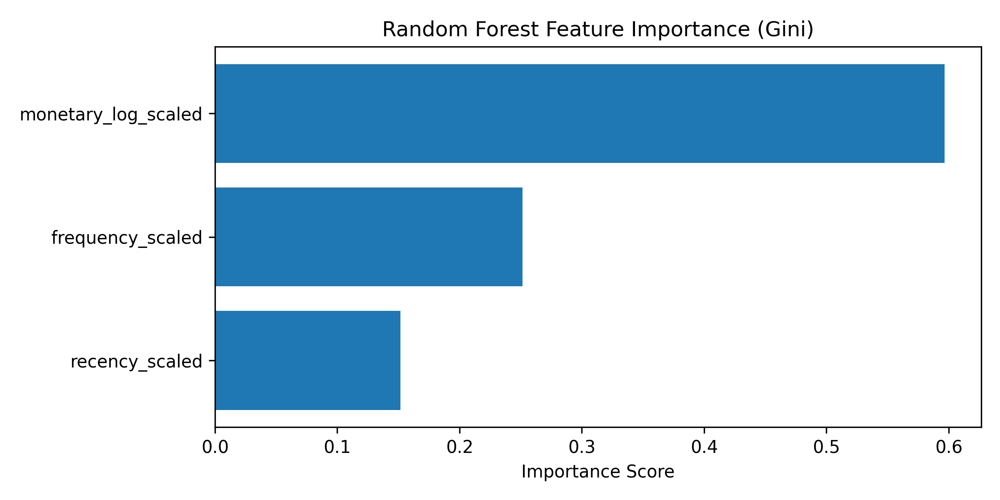
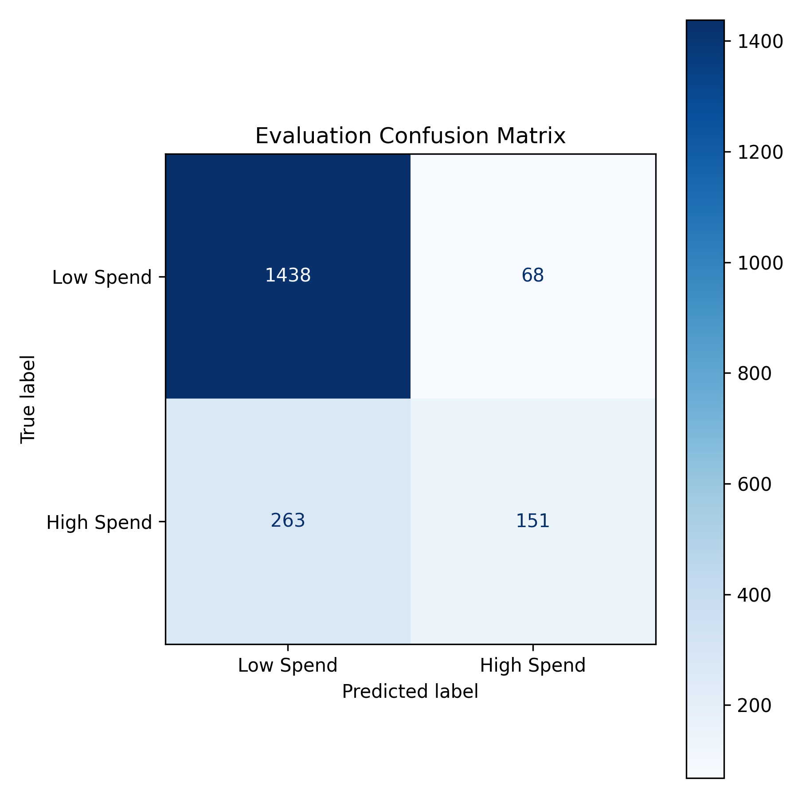

MLflow Run ID: 1520ebcbb90948d79e5accab116f5b62
PSI Context: Retrain Triggered: True. Max PSI: 0.542 on 'frequency_scaled' (Threshold: 0.25). AUC Drop: 0.161 (Tolerance: 0.03).
| Metric | Value |
|---|---|
| AUC (Mean) | 0.7884 |
| AUC 95% CI | [0.7592, 0.8136] |
| Brier Score (Calibration) | 0.1287 |
| Accuracy | 0.8276 |
| Precision / Recall | 0.6895 / 0.3647 |
| Residual Stability | 0.0314 |

